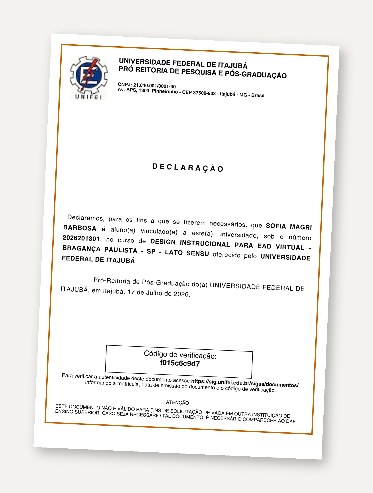
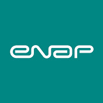
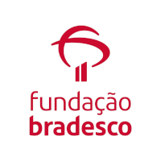
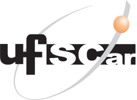
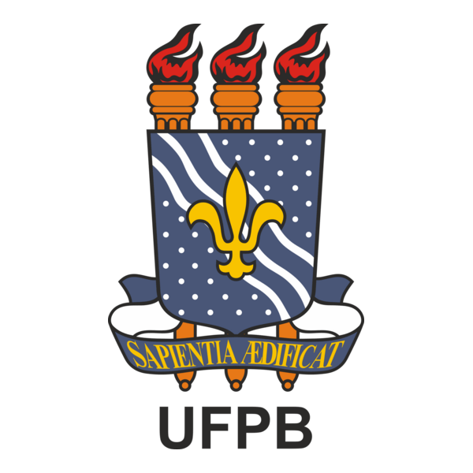

Pós-Graduação em Design Instrucional
UNIFEI — Universidade Federal de Itajubá
A UNIFEI está entre as melhores universidades federais do Brasil, com cursos de alta qualidade e precisão técnica, focada na formação de profissionais que façam a diferença no mercado.
Diplomas & Formação Acadêmica Principal
Graus acadêmicos de graduação e pós-graduação.
Licenciatura em Pedagogia
Faculdades Atibaia (FAAT) • Conclusão em 2009

Pós-Graduação em Design Instrucional
UNIFEI — Universidade Federal de Itajubá
Cursos Correlatos & Aperfeiçoamentos
Como designer instrucional, o lifelong learning é constante. Esta é apenas uma breve amostra de minha formação; mais do que estes certificados o que valida minha atuação é a aplicação prática de cada aprendizado nos projetos que apresento.

Design Instrucional com Articulate Storyline 360
ENAP • 20 horas (2026)
Design Instrucional para Nativos e Imigrantes Digitais
ENAP • 30 horas (2026)

Design Thinking para Educadores
Fundação Bradesco • 20 horas (2026)

Docência em EaD: Formação em Tutoria
UFSCar • 10 horas (2026)
Docência em EaD: Introdução ao Moodle
UFSCar • 15 horas (2026)
Ferramentas Intermediárias I e II do Moodle
UNIFEI • 60 horas (2026)
Fluência em Inteligência Artificial
Fundação Bradesco • 4 horas (2026)
Gamificação no Moodle
IFES • 50 horas
Inteligência Artificial Aplicada
FAETEC • 180 horas

Inteligência Artificial Conceitos e Prompts
UFPB • 30 horas
TDICs no Ensino Superior
FAVENI • 80 horas
Uso Educacional do Canva
IFES • 6 horas
Depoimentos & Indicações
Mestres Universitários e outros comentários de DI's.
Quer entender como aplico todo esse embasamento teórico em projetos reais?
Conheça Meus Projetos na Prática